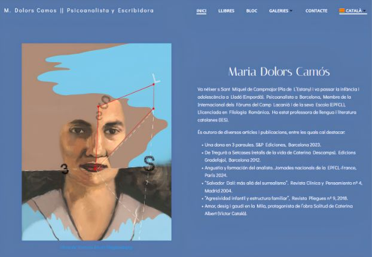

01 · Editorial
Maria Dolors Camós
Web de la psicoanalista y escritora. Diseño sobrio y literario que pone en valor su obra publicada y su trayectoria en la Escuela Lacaniana. Tipografía serif, paleta neutra y estructura pensada para la lectura pausada.
Ver sitio →